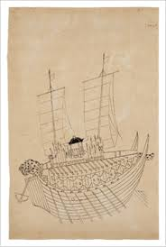

거북선 (龜船)
"판옥선의 상부를 개량하여 개판(덮개)을 씌운 조선 수군의 무적 돌격선"

- 정의: 조선 수군의 주력 함선인 판옥선(板屋船)의 아랫부분 선체를 바탕으로, 윗부분에 덮개를 덮고 칼과 송곳을 꽂아 적이 배에 오르지 못하게 만든 장갑화된 특수 군선.
- 의의: 임진왜란 직전 전라좌수사 이순신에 의해 창의적으로 재건되어 사천해전(첫 출전), 한산도대첩 등에서 선두 돌격선으로 활약하며 남해의 제해권을 장악하는 데 결정적 기여를 함.
1. 거북선의 역사적 변천
조선 초기 (태종 대)의 기록
- 최초 기록: 1413년(태종 13) 태종이 임진나루를 지나다 거북선과 왜선이 모의 전투를 벌이는 모습을 보았다는 기록이 최초로 등장함
- 특징: 당시에도 많은 적과 충돌해도 끄떡없을 만큼 견고했으나, 조선 전기의 수군 체제가 대·중·소의 맹선(猛船) 체제(평시 조운선 겸용) 중심이었기에 주력 전선으로 적극 활용되지는 못함. 이후 임진왜란 전까지 약 180년간 기록이 단절됨.
임진왜란기 (이순신의 재창제)
- 건조와 훈련: 왜란 발발 1년 전 전라좌수사에 부임한 이순신이 전란을 대비해 자의로 건조함. 『난중일기』에 따르면 1592년 2월 돛에 쓸 범포를 조달하고, 왜란 발발 직전인 4월 12일까지도 포격 훈련을 진행함.
- 실전 투입: 1592년 5월 29일 사천해전에 최초로 돌격선으로 투입되어 돌진 후 총통으로 일본 군선을 불살라 대승을 거둠.
조선 후기의 지속적 운용
- 임진왜란 이후에도 거북선은 주력선인 판옥선을 보조하는 핵심 전략 자산으로 인식되어 조선 후기까지 지속적으로 건조 및 개량되며 군사적으로 활용됨.
2. 구조와 형태에 관한 학술적 논쟁 및 사료 비교
거북선은 현재 남아있는 실물 유물이 없어 구조에 대한 다양한 해석과 사료 간 상충하는 부분이 존재합니다.- 외관상 2층설: 아래 선체는 판옥선과 같고, 윗부분만 거북 모양으로 덮었다는 견해.
- 3층설(또는 2.5층설): 격군(노젓는 이)과 사수(전투원)의 공간을 완전히 분리하고 개판(덮개) 쪽에 포혈이 배치되어 있어 온전한 3층 혹은 3층에 가까운 구조였다는 견해. (※ 층수는 운행 방식 및 포격 전술과 직결됨).
- 『간재집(艮齋集)』 (이덕홍, 1592년): * 광해군에게 올린 글에서 귀갑선(龜甲船)의 형태를 상세히 묘사. 등 부분에 창검을 붙이고 머리에 쇠뇌를 숨기며, 허리에 판옥을 두어 사수가 들어가고 옆으로 사혈(활구멍), 아래로 총통과 대부(큰 도끼)를 두어 충돌·포격했다고 기록.
- 수록된 '귀갑선도'는 덮개가 곡선이 아닌 다각형(6각 또는 8각)으로 그려져 있어 구조 연구의 중요 근거가 됨.
- 『임진장초』 및 이분의 「행록」 (임진왜란 당시 가장 정확한 기록):
- 용머리[용두(龍頭)]에서 대포(화포)를 직접 발사했다고 기록함.
- 이분의 기록에는 측면 포혈(포구멍)이 6개라고 명시됨.
- 『이충무공전서』 (정조 19년, 1795년):
- 통제영 및 전라좌수영 거북선 도설이 수록되어 있으나, 이는 이순신 당시가 아닌 정조 때 개량된 거북선의 모습임.
- 여기서는 거북머리[귀두(龜頭)]에서 대포가 아닌 *연기(유황연)*를 피운다고 하였고, 그림상의 포혈 수도 임진왜란 당시 기록보다 훨씬 많이 그려져 있음.
- 이순신 종가 소장 유물 (조선 후기 그림):
- 개판(덮개) 위에 지휘소인 장대(將臺)가 설치되어 있어, 조선 후기로 갈수록 외부 관측과 전투 지휘를 위해 구조적 변화가 일어났음을 보여줌.
층수(層數)에 대한 대립되는 견해
주요 사료별 묘사의 차이점
3. 거북선의 전술적 우수성
- 철저한 승조원 방호력: 개판 위에 칼과 송곳을 촘촘히 꽂아, 일본 수군의 장기인 '배 위로 뛰어올라 백병전(육박전)을 벌이는 전술'을 원천 차단함.
- 근접 포격전 수행: 선체가 강력하게 방호되어 적의 조총 사격 속에서도 격군과 사부들이 안전하게 적선 내부 깊숙이 돌진할 수 있었음. 이로 인해 화포의 명중률을 극대화하여 적함을 확실하게 격파하는 돌격선 역할을 완벽히 수행함.